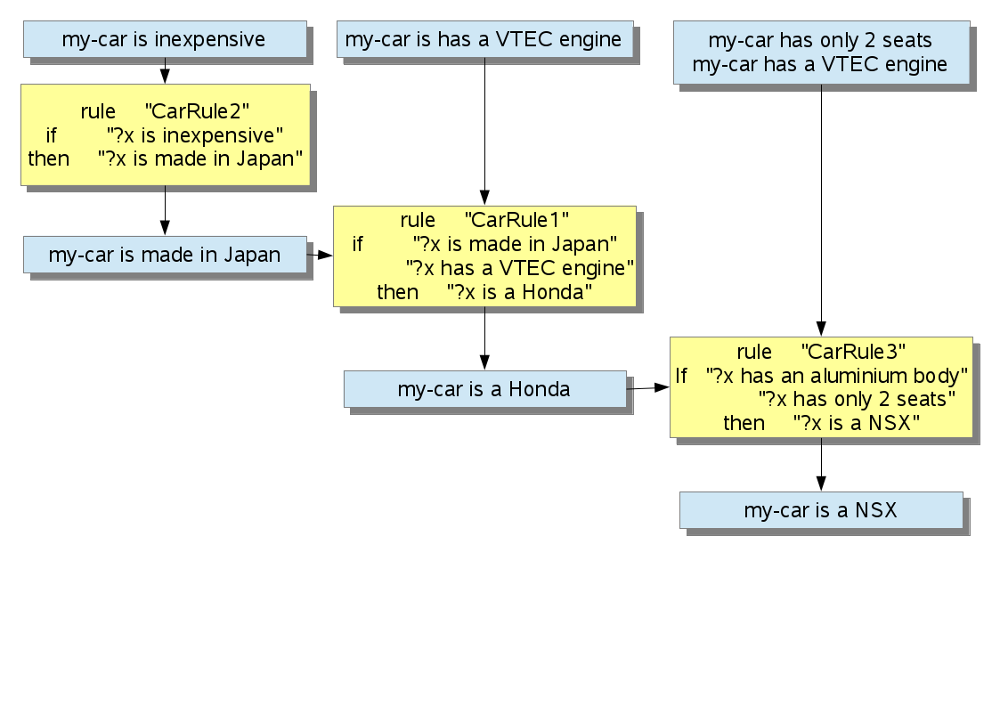

はじめに、CarRule1の前文とデータが一致するかどうかの判定を行う。 今回の例ではCarRule1の前文(2つ)ともマッチする文章がデータには存在しない。このルールによってワーキングメモリにデータが追加されることはない。 よってCarRule1の探索が終了し、次のルールであるCarRule2の探索を行う。
CarRule2の前件は、1番目のデータ"my-car is inexpensive"とマッチングする(トリガ)。マッチング判定がtrueとなると、さらに CarRule2の後件の文章("?x is made in Japan")がワーキングメモリに存在するかどうかの判定を行う。 今回は存在しないので、後件の文章("?x is made in Japan")がワーキングメモリに追加され、 "Success: my-car is made in Japan" が出力される。 ここでCarRule2の探索は終了となる。
どこかのルールでtrueとなっても、ルールの探索は引き続き行われる。よってワーキングメモリを引き継いだままCarRule3の探索を開始する。CarRule3の前件とデータはマッチングしないため、データの追加が行われることはない。 ここでCarRule3の探索が終了となる。
すべてのルールの探索が終わったため、この巡でワーキングメモリに新たなアサーションが追加されたかどうかを調べる。 今回はCarRule2で"my-car is made in Japan"が追加されたため、trueとなる。trueとなった場合、再度ルールの探索をはじめから開始する。
2巡目再度、CarRule1から探索を開始する。 今回は、ワーキングメモリにはじめから格納されている"my-car is made in Japan","my-car has a VTEC engine",に加えて1巡目でワーキングメモリに追加された"my-car is made in Japan"によってルールCarRule1がトリガされる。 1巡目では"my-car is made in Japan"がワーキングメモリに格納されていなかったため、ルールCarRule1はトリガされることはなかった。 CarRule1の後件のアサーションである"my-car is a Honda"はワーキングメモリに格納されていないため、このアサーションはワーキングメモリに無事格納される。
すべてのルールの探索が終わったため、再度この巡でワーキングメモリに新たなアサーションが追加されたかどうかを調べる。CarRule2もワーキングメモリに前件のアサーションが格納されているので、トリガされる。 しかし、ワーキングメモリに後件の文章"my-car is made in Japan"が既に格納されているため、新たに格納されることはなく、CarRule2の処理が終了する。
CarRule3は1巡目と同様にマッチング判定を行うが、トリガされることなく2巡目は終了している。 アサーション追加判定は、今回もCarRule1で"my-car is a Honda"が追加されたため、trueとなる。 3巡目再度、CarRule1から探索を開始する。 CarRule1はトリガされるが、"my-car is a Honda"は既にワーキングメモリに格納されているため、新たに追加されることはない。 また今回も、はじめから格納されている"my-car has an aluminium body","my-car has only 2 seats",に加えて2巡目でワーキングメモリに追加された"my-car is a Honda"によってルールCarRule2がトリガされる。 CarRule2の後件のアサーションである"my-car is a NSX"はワーキングメモリに格納されていないため、このアサーションが格納される。
CarRule3は1巡目と同様にマッチング判定を行うが、トリガされることなく3巡目は終了している。 今回もアサーション追加判定はtrueとなる。 4巡目再度、CarRule1から探索を開始する。 CarRule1,CarRule2,CarRule3それぞれトリガは起こるが、全てのルールの後件がワーキングメモリに存在するため、新たに格納されることはない。 よって、アサーション追加判定はfalseとなり、推論は終了する。
また視覚的に推論を表すと以下のようになる。  ・後ろ向き推論 今回も簡単のため、質問を"?x is an Accord Wagon"ではなく"?x is a Honda"とする。 また、ルールからCarRule7を取り除き推論を行う。 以上のように設定した後、プログラムを実行すると、以下のような結果を得た。 この実行例を基に説明を行う。
手順1
この実行例を基に説明を行う。
手順1
与えられた仮説は"?x is a Honda"である。これと照合するワーキングメモリのアサーションは存在しないため、ルールを使って仮説を置き換える。 まずCarRule8の後件が仮説と照合する。 このトリガにより、仮説が"?x6 is made in Japan","?x6 has a VTEC engine"に置き換わる。 手順2以降これらを証明する方針となる。 手順1終了時の仮説リスト:["?x6 is made in Japan","?x6 has a VTEC engine"]
手順2手順1によって置き換わった仮説をアサーション、ルールの後件と照合する。照合した結果"?x6 is made in Japan"はCarRule1と照合、"?x6 has a VTEC engine"はワーキングメモリと照合する。"?x6 is made in Japan"はルールとの照合のため前件である"?x7 is inexpensive"と置き換わる。 "?x6 has a VTEC engine"はワーキングメモリの"his-car has a VTEC engine"と照合されるため、事実と結びついたことになる。 手順2終了時の仮説リスト:["?x7 is inexpensive"]
手順3最後に手順2終了時の仮説リスト"?x7 is inexpensive"を証明する。 ワーキングリスト内の"his-car is inexpensive"と照合されるため、これも事実として認められる。 これにより、仮説全てを証明したことになり、与えられた質問"?x is a Honda"はtrue,{?x=his-car}を得る。
また視覚的に推論を表すと以下のようになる。
Pattern pat = Pattern.compile("What is this?");
java.util.regex.Matcher mat = pat.matcher(que);
if(mat.find()){
pattern[1] ="It is a ?x";
}
else{
ArrayList<String> list= new ArrayList<String>();
list.add("differnt question type");
return list;
}
ここでは正規表現を用いて質問形式があっているか調べている。
try { // ファイル読み込みに失敗した時の例外処理のためのtry-catch構文
// 文字コードを指定してBufferedReaderオブジェクトを作る
BufferedReader in = new BufferedReader(new InputStreamReader(
new FileInputStream(fileName), "UTF-8"));
// 変数lineに1行ずつ読み込むfor文
for (String line = in.readLine(); line != null; line = in
.readLine()) {
rb.wm.addAssertion(line);// アサーションの追加
}
} catch (IOException e) {
e.printStackTrace(); // 例外が発生した所までのスタックトレースを表示
}
rb.forwardChain();
ここではファイルから1行ずつよみこんでアサーションを追加している。
try {
File file = new File(memo);
file.createNewFile();
if (checkBeforeWritefile(file)) {
PrintWriter pw = new PrintWriter(new BufferedWriter(
new FileWriter(file)));
for (String line : rb.wm.assertions) {
pw.println(line);// 前向き推論で得られたアサーションをファイルに書き込む
}
pw.close();
ここでは前向き推論によって最終的に得られたワーキングメモリを1つずつファイルに書き込んでいる。Unify.match(memo, pattern, 1,new HashMap<String, String>(), pattern.length);ここでワーキングメモリと質問文のマッチングを行っている。
String[] one = Unify.ansList.toString().split("");
boolean front =false;
String ans1="";
ArrayList<String> answer=new ArrayList<String>();
for(String l:one){
if(l.equals(")")){
answer.add(ans1);
front =false;
ans1="";
}
if(front){
ans1+=l;
}
if(l.equals("(")){
front =true;
}
}
まずansListをsplitを用いて1文字ずつの配列に分解する。
if(answer.size()==0){
}
else{
for(String list:answer){
if( Character.isUpperCase( list.charAt( 0 ) ) ) {//大文字なら
ans.add("It is a "+list);
}
}
}
答えが見つからなければスルーして、もし見つかれば順に取り出して大文字から始まったら答えであるので答えであるということをArrayListに追加する。
StringTokenizer st = new StringTokenizer(thePattern);
for (int i = 0; i < st.countTokens();) {
String tmp = st.nextToken();
if (var(tmp)) {
result = result + " " + (String) theBindings.get(tmp);
} else {
result = result + " " + tmp;
}
}
まずトークンごとにパターンを分解する。
if ("rule".equals(st.sval)) {
st.nextToken();
// if(st.nextToken() =='"'){
name = st.sval;
st.nextToken();
トークンがもしruleと等しかった場合トークンを次のものにしてそのトークンをnameに格納している。
if ("if".equals(st.sval)) {
antecedents = new ArrayList<String>();
st.nextToken();
while (!"then".equals(st.sval)) {
antecedents.add(st.sval);
st.nextToken();
}
トークンがifであった場合thenがくるまでは前件が記述されているはずなのでthenになるまでwhileループを使ってArrayListに前件を追加している。
if (i == fin) { // 再帰の終了条件
keyset = vars.keySet().toString(); // キーの順番を保持
// 変数束縛の集合の要素として追加
ansList.add("("+ vars.values().toString().substring(1, vars.values().toString().length() - 1) + ")");
}
再帰の終了時に変数束縛の変数部分をkeysetにいれて、変数束縛の集合の要素をansListに追加する。
else {
// 文字コードを指定してBufferedReaderオブジェクトを作る
BufferedReader in = new BufferedReader(new InputStreamReader(new FileInputStream(fileName), "UTF-8"));
// ファイルから変数lineに1行ずつ読み込むfor文
for (String line = in.readLine(); line != null; line = in.readLine()) {
Unifier unifier = new Unifier();
if (i == 1) {
if (unifier.unify(pattern[i], line, unifier.vars)) { // パターンとlineのマッチング成功
match(fileName, pattern, i + 1, unifier.vars, fin); // 次のパターンについて再帰的に実行
}
} else {
// マッチングする前の変数束縛をコピー
HashMap<String, String> mem = new HashMap<String, String>(vars);
if (unifier.unify(pattern[i], line, mem)) { // パターンとlineのマッチング成功
match(fileName, pattern, i + 1, unifier.vars, fin); // 次のパターンについて再帰的に実行
}
unifier.vars = mem; // 新しい変数束縛をする前のハッシュマップに書き換え
}
}
}
ファイルを1行ずつ読み込み、最初はパターンとその行をマッチングして成功したら再帰を行う。// 同じなら成功 if (string1.equals(string2)) return true;ここでは引数2つが等しいかどうかを比較している。
st1 = new StringTokenizer(string1); st2 = new StringTokenizer(string2); // 数が異なったら失敗 if (st1.countTokens() != st2.countTokens()) return false;まず引数2つをトークンにわける。
int length = st1.countTokens();
buffer1 = new String[length];
buffer2 = new String[length];
for (int i = 0; i < length; i++) {
buffer1[i] = st1.nextToken();
buffer2[i] = st2.nextToken();
}
ここでは2つの引数をトークンごとに配列に格納している。
for (int i = 0; i < length; i++) {
if (!tokenMatching(buffer1[i], buffer2[i])) {
return false;
}
}
そして配列すべてに対してマッチするかを確かめる。if (token1.equals(token2)) return true; if (var(token1) && !var(token2)) return varMatching(token1, token2); if (!var(token1) && var(token2)) return varMatching(token2, token1); if (var(token1) && var(token2)) return varMatching(token1, token2); return false;はじめのif文ではトークンどうしが等しければtrueを返す。
if (vars.containsKey(vartoken)) {
if (token.equals(vars.get(vartoken))) {
return true;
} else {
return false;
}
}
もし第２引数の値とハッシュマップのその値が等しければtrueを返しそうでなければfalseを返す。
replaceBuffer(vartoken, token);
if (vars.containsValue(vartoken)) {
replaceBindings(vartoken, token);
}
vars.put(vartoken, token);
replaceBufferを行い、ハッシュマップにvartokenが含まれているときはreplaceBindeingを行って変数束縛をする。
for (int i = 0; i < buffer1.length; i++) {
if (preString.equals(buffer1[i])) {
buffer1[i] = postString;
}
if (preString.equals(buffer2[i])) {
buffer2[i] = postString;
}
}
2つの文に対してもし変数が含まれている場合はその部分の文字列を束縛した値に変更している。
if (preString.equals(vars.get(key))) {
vars.put(key, postString);
}
このようにハッシュマップの値を入力している。
It has four-wings It has six-legs It is flying It has multiple eyes It is red It has red-wingsこのようにして質問は「What is this?」で実行したものである。
課題に加えて，以下の三点を独自仕様として組み込んだ．
1.に関して，虫に関するルールベースをinsect.dataとして，ワーキングメモリをinsectWm.dataとして用意して，プログラム中でそれらのファイルを読み込む仕様とした．
2.に関して，"What is ~ ?", "Does ~ have ~ ?", "Is ~ ~ ?", "How many ~ does ~ have"という質問に対して応答する仕様とした．
3.に関して，try-catch構文を使用してエラー処理を行う仕様とした．
実装したプログラムは五つのクラス RuleBaseSystem, RuleBase, FileManager, Rule, Unifier で構成されている．
RuleBaseSystem クラスは main メソッド，インスタンスメソッドとして backward(), makegraph() メソッドを持つ．
main メソッドは，実行時に与えられる引数を質問として後向き推論を実行する．
backward() メソッドは引数としてクラス String 型の変数 wmFileName, クラス String 型の変数 rbFileName, クラス String 型の変数 hypothesis, クラス String 型の変数 que, int 型の変数 mode を取り，wmFileNameとして指定されたファイルをワーキングメモリとして，rbFileNameとして指定されたファイルをルールベースとして，後向き推論によって仮説hypothesisを検証する．後向き推論の結果によって適切な応答を行う．
makegraph() メソッドは，GraphVizを使用して後向き推論の推論過程を可視化する．
RuleBase クラスは コンストラクタ，インスタンスメソッドとして backwardChain(), matchingPatterns(), matchingPatternOne(), rename(), instantiate(), var() メソッドを持つ．
コンストラクタ は引数としてクラス ArrayList 型の変数 theRules, クラス ArrayList 型の変数 theWm を取り，RuleBase クラスのインスタンスを生成する．
backwardChain() メソッドは引数としてクラス ArrayList 型の変数 hypothesis を取り，引数として与えられた hypothesis を仮説とした後向き推論を行い，戻り値として発火したルールとアサーションが格納されているクラス ArrayList 型の変数 theFired を返す．
matchingPatterns() メソッドは引数としたクラス ArrayList 型の変数 thePatterns, クラス HashMap 型の変数 theBinding, クラス ArrayList 型の変数 theFired を取り，与えられた全ての仮説とマッチするワーキングメモリのアサーションやルールの後件に対する変数束縛情報を再帰的に求めて，戻り値として matchingPatternOne() の結果が成功したらtrue, 失敗したらfalseを返す．
matchingPatternOne() メソッドは引数としてクラス String 型の変数 thePattern, クラス HashMap 型の変数 theBinding, int 型の変数 cPoint, クラス ArrayList 型の変数 theFired を取り，与えられた一つの仮説を満たす変数束縛を得て，戻り値としてユニフィケーションが成功したら，成功したワーキングエレメントの番号またはルールの番号の次の番号を返し，ユニフィケーションが失敗したら，-1を返す．
rename() メソッドは引数としてクラス Rule 型の変数 theRule を取り，戻り値として引数として与えられた theRule の中に含まれる変数をユニークな名前の変数に置き換えたルールを返す．
instantiate() メソッドは引数としてクラス String 型の変数 thePattern, クラス HashMap 型の変数 theBindings を取り，戻り値として引数として与えられた thePattern を変数束縛情報 theBindings に従って具体化したものを返す．
var() メソッドは引数としてクラス String 型の変数 str1 を取り，戻り値として str1 が変数ならtrueを返す．
FileManager クラスはインスタンスメソッドとして loadRules(), loadWm() メソッドを持つ．
loadRules() メソッドは引数としてクラス String 型の変数 theFileName を取り，戻り値としてtheFileNameとして指定されたファイルから読み出したルールのリストを返す．
loadWm() メソッドは引数としてクラス String 型の変数 theFileName を取り，戻り値としてtheFileNameとして指定されたファイルから読みだしたアサーションのリストを返す．
Rule クラスは コンストラクタ，インスタンスメソッドとして getRenamedRule(), getVars(), makeRenamedVarsTable(), renameVars(), var(), getName(), toString(), getAntecedents(), getConsequent() メソッドを持つ．
コンストラクタ は引数としてクラス String 型の変数 theName, クラス ArrayList 型の変数 theAntecedents, クラス String 型の変数 theConsequent を取り，Rule クラスのインスタンスを生成する．
getRenamedRule() メソッドは引数として int 型の変数 uniqueNum を取り，戻り値として uniqueNum を用いて Rule クラスのインスタンスであるルールの変数をリネーミングしたルールを返す．
getVars() メソッドは引数としてクラス String 型の変数 thePattern, クラス ArrayList 型の変数 vars を取り，戻り値として thePattern から変数を取り出したリストを返す．
makeRenamedVarsTable() メソッドは引数としてクラス ArrayList 型の変数 vars, int 型の変数 uniqueNum を取り，戻り値として 元の変数と新たな変数の対応を保管するクラス HashMap 型の result を返す．
renameVars() メソッドは引数としてクラス String 型の変数 thePattern, クラス HashMap 型の変数 renamedVarsTable を取り，戻り値として thePattern の中の変数を renamedVarsTable を基にして書き換えたものを返す．
var() メソッドは引数としてクラス String 型の変数 str を取り，戻り値として str が変数ならば true を，変数でなければ false を返す．
getName() メソッドは，戻り値として Rule クラスのインスタンスの name を返す．
toString() メソッドは，戻り値として Rule クラスのインスタンスを文字列にしたものを返す．
getAntecedents() メソッドは，戻り値として Rule クラスのインスタンスの antecedents を返す．
getConsequent() メソッドは，戻り値として Rule クラスのインスタンスの consequent を返す．
Unifier クラスは コンストラクタ，3引数のunify(), 2引数のunify(), tokenMatching(), varMatching(), replaceBuffer(), replaceBindings(), var() メソッドを持つ．
コンストラクタ は，Unifier クラスのインスタンスを生成する．
3引数のunify() メソッドは引数としてクラス String 型の変数 string1, クラス String 型の変数 string2, クラス HashMap 型の変数 theBindings を取り，戻り値として 2引数のunify() が成功したら true を，失敗したら false を返す．
2引数のunify() メソッドは引数としてクラス String 型の変数 string1, クラス String 型の変数 string2 を取り，戻り値としてパターンマッチングが成功したら true を，失敗したら false を返す．
tokenMatching() メソッドは引数としてクラス String 型の変数 token1, クラス String 型の変数 token2 を取り，戻り値として tokn1 と token2 のパターンマッチングに成功したら true を，失敗したら false を返す．
varMatching() メソッドは引数としてクラス String 型の変数 vartoken, クラス String 型の変数 token を取り，戻り値として vartoken と token のパターンマッチングに成功したら true を，失敗したら false を返す．
replaceBuffer() メソッドは引数としてクラス String 型の変数 preString, クラス String 型の変数 postString を取り，bufferに存在するpreStringという名前の変数を全てpostStringという定数に置き換える．
replaceBindings() メソッドは引数としてクラス String 型の変数 preString, クラス String 型の変数 postString を取り，preStringをハッシュ値として持つキーのハッシュ値をpostStringに変更する．
var() メソッドは引数としてクラス String 型の変数 str1 を取り，str1が変数なら戻り値としてtrueを返す．
実装したプログラムに関して，先に挙げた RuleBaseSystem クラスが持つ main, backward(), makegraph() メソッドの説明を行う．
下記は main メソッドの実装である．ここで特筆すべき点は，実行時に与えられる引数がなかった場合のチェックを行っていることである．引数がなかった場合はこの後向き推論のプログラムに引数が必要であることをコンソールに出力する．実行時に与えられる引数を質問として，その質問の形式に応じて後向き推論で検証すべき仮説をクラス String 型の変数 hypothesis としている．質問の形式に応じて，応答文を生成する方法も変わってくるので，その質問の形式を int 型の変数 mode としている．
public static void main(String args[]) {
if (args.length != 1) {
System.out.println("Usage: %java RuleBaseSystem [query strings]");
System.out.println("Example:");
System.out.println(" \"?x is b\" and \"?x is c\" are queries");
System.out.println(" %java RuleBaseSystem \"?x is b,?x is c\"");
} else {
// fm = new FileManager();
// ArrayList<Rule> rules = fm.loadRules("CarShop.data");
// ArrayList rules = fm.loadRules("AnimalWorld.data");
// ArrayList<String> wm = fm.loadWm("CarShopWm.data");
// ArrayList wm = fm.loadWm("AnimalWorldWm.data");
// ArrayList<Rule> rules = fm.loadRules("Insect.data");
// ArrayList<String> wm = fm.loadWm("InsectWm.data");
// rb = new RuleBase(rules, wm);
// StringTokenizer st = new StringTokenizer(args[0], ",");
// ArrayList>String> queries = new ArrayList<String>();
// for (int i = 0; i < st.countTokens(); ) {
// queries.add(st.nextToken());
// }
// rb.backwardChain(queries);
// ファイル名指定
String wmFileName = "InsectWm.data";
String rbFileName = "Insect.data";
String question = args[0]; // 第1引数に検証したい仮説
// 正規表現のパターンを作成
Pattern pat1 = Pattern.compile("What is [a-z]*");
Matcher mat1 = pat1.matcher(question);
Pattern pat2 = Pattern.compile("Does [a-zA-Z]* have [a-z]*");
Matcher mat2 = pat2.matcher(question);
Pattern pat3 = Pattern.compile("Is [a-zA-Z]* [a-z]*");
Matcher mat3 = pat3.matcher(question);
Pattern pat4 = Pattern.compile("How many [a-z]* does [a-zA-Z]* have");
Matcher mat4 = pat4.matcher(question);
// Pattern pat4 = Pattern.compile("Is it [a-z]*");
// Matcher mat4 = pat4.matcher(args[0]);
String hypothesis = null;
String que = null;
String subject = null; // 主語
String object = null; // 目的語
int mode = 0;
if (mat1.find()) { // What is ~ ? ifのアサーションを全て出力
subject = question.substring(8, question.length() - 2);
hypothesis = "?x is " + subject;
mode = 1;
} else if (mat2.find()) { // Does ~ have ~ ?
subject = question.substring(5, question.indexOf("have") - 1);
hypothesis = "?x is a " + subject;
object = question.substring(question.indexOf("have") + 5);
que = " has " + object;
mode = 2;
} else if (mat3.find()) { // Is ~ ~ ?
subject = question.substring(3).substring(0, question.substring(3).indexOf(" "));
hypothesis = "?x is a " + subject;
object = question.substring(3).substring(question.substring(3).indexOf(" "));
que = " is a" + object;
mode = 3;
} else if (mat4.find()) { // How many ~ does ~ have ?
subject = question.substring(question.indexOf("does") + 5, question.indexOf("have") - 1);
hypothesis = "?x is a " + subject;
object = question.substring(9, question.indexOf("does") - 1);
que = " has " + object;
mode = 4;
}
// hypothesis = "?x is a Carolla Wagon";
// que = "his-car has several seats";
System.out.println("Question:" + question);
// System.out.println(hypothesis);
// System.out.println(que);
// System.out.println(Integer.toString(mode));
ArrayList<String> ans = backward(wmFileName, rbFileName, hypothesis, que, mode);
System.out.println(ans);
}
makegraph();
}
下記は backward() メソッドの実装である．ここで特筆すべき点は，引数として与えられたクラス String 型の wmFileName として指定されたファイルのアサーションを FileManager クラスの loadRules() メソッドを使用して，クラス ArrayList 型の変数 rules に一つずつ格納していき，引数として与えられたクラス String 型の rbFileName として指定されたファイルのルールを FileManager クラスの loadWm() メソッドを使用して，クラス ArrayList 型の変数 wm に一つずつ格納していることである．そのようにして得た rules と wm を引数としてクラス RuleBase 型の変数 rb をインスタンス化している．インスタンス化した rb に対して RuleBase クラスの backwardChain() メソッドを使用して後向き推論を実行する．そしてbackwardChain() メソッドの戻り値として返されたクラス ArrayList 型の変数 theFired を用いて質問の形式に合わせた適切な応答文を生成して出力している．
public static ArrayList<String> backward(String wmFileName, String rbFileName, String hypothesis, String que, int mode) {
fm = new FileManager();
ArrayList<Rule> rules = fm.loadRules(rbFileName);
//ArrayList rules = fm.loadRules("AnimalWorld.data");
ArrayList<String> wm = fm.loadWm(wmFileName);
//ArrayList wm = fm.loadWm("AnimalWorldWm.data");
rb = new RuleBase(rules, wm);
// System.out.println(rb.wm.toString()); // 数字に対してエラーをはく
StringTokenizer st = new StringTokenizer(hypothesis, ",");
ArrayList<String> queries = new ArrayList<String>();
for (int i = 0; i < st.countTokens(); ) {
queries.add(st.nextToken());
}
ArrayList<String> theFired = new ArrayList<String>();
try {
theFired = rb.backwardChain(queries); // 後向き推論の実行
} catch (Exception e) {
System.out.println(e);
}
boolean success = true;
if (mode != 1) {
try {
que = theFired.get(0).substring(0, theFired.get(0).indexOf(" ")) + que;
} catch (Exception e) {
System.out.println(e);
success = false;
}
}
System.out.println();
System.out.println("Answer");
if (success) {
if (mode == 1) {
String subject = hypothesis.substring(8); // 主語を取得
// System.out.println(subject);\
boolean result = false;
for (String s : theFired) {
if (!s.substring(s.indexOf(" is ") + 1).equals(hypothesis.substring(hypothesis.indexOf(" is ") + 1))) { // theFiredの末尾にはhypothesisが入っている
if (s.contains(" is ")) { // ~ is ~ という形式のアサーションのみ出力
result = true; // 1つでも解がある
String ans = subject + s.substring(s.indexOf(" is "));
System.out.println(ans);
ansList.add(ans);
}
}
}
// if (theFired.contains(que)) {
// System.out.println("Exists");
// } else {
// System.out.println("Not Exists");
// }
if (!result) {
String ans = "I don't know.";
System.out.println(ans);
ansList.add(ans);
}
} else if (mode == 2) {
Pattern patSubject = Pattern.compile(que.substring(0, que.indexOf("has") + 3));
// System.out.println(patSubject);
Pattern patObject = Pattern.compile(que.substring(que.indexOf("has") + 4));
// System.out.println(patObject);
boolean result = false;
for (String s : theFired) {
Matcher matSubject = patSubject.matcher(s);
if (matSubject.find()) {
// System.out.println("success");
Matcher matObject = patObject.matcher(s);
if (matObject.find()) {
// System.out.println("Exists");
result = true;
String ans = "Yes, it has.";
System.out.println(ans);
ansList.add(ans);
}
}
}
if (!result) {
String ans = "No, it hasn't.";
System.out.println(ans);
ansList.add(ans);
}
} else if (mode == 3) {
Pattern patSubject = Pattern.compile(que.substring(0, que.indexOf("is") + 3));
// System.out.println(patSubject);
Pattern patObject = Pattern.compile(que.substring(que.indexOf("is") + 4));
// System.out.println(patObject);
boolean result = false;
for (String s : theFired) {
Matcher matSubject = patSubject.matcher(s);
if (matSubject.find()) {
// System.out.println("success");
Matcher matObject = patObject.matcher(s);
if (matObject.find()) {
// System.out.println("Exists");
result = true;
String ans = "Yes, it is.";
System.out.println(ans);
ansList.add(ans);
}
}
}
if (!result) {
String ans = "No, it isn't.";
System.out.println(ans);
ansList.add(ans);
}
} else if (mode == 4) {
Pattern patSubject = Pattern.compile(que.substring(0, que.indexOf("has") + 3));
// System.out.println(patSubject);
Pattern patObject = Pattern.compile(que.substring(que.indexOf("has") + 4));
// System.out.println(patObject);
boolean result = false;
for (String s : theFired) {
Matcher matSubject = patSubject.matcher(s);
if (matSubject.find()) {
// System.out.println("success");
Matcher matObject = patObject.matcher(s);
if (matObject.find()) {
// System.out.println("Exists");
result = true;
s = s.replaceAll(patSubject.toString(), "");
s = s.replaceAll("-" + patObject.toString(), "");
s = s.replaceAll(" ", "");
System.out.println(patSubject + " " + s + " " + patObject + ".");
System.out.println(ans);
ansList.add(ans);
}
}
}
if (!result) {
String ans = "I don't know.";
System.out.println(ans);
ansList.add(ans);
}
}
} else {
if (mode == 1) {
String ans = "I don't know.";
System.out.println(ans);
ansList.add(ans);
} else if (mode == 2) {
String ans = "No, it hasn't.";
System.out.println(ans);
ansList.add(ans);
} else if (mode == 3) {
String ans = "No, it isn't.";
System.out.println(ans);
ansList.add(ans);
} else if (mode == 4) {
String ans = "I don't know.";
System.out.println(ans);
ansList.add(ans);
}
}
return ansList;
}
下記は makegraph() メソッドの実装である．ここで特筆すべき点は，GraphVizを使用して後ろ向き推論の推論過程を描画するためのdotファイルを記述していることである．dotファイルを元にした描画は GraphViz クラスの writeGraphToFile() メソッドを使用して行っている．描画した推論過程はback1.pngとして /workspace/BackwardChain の下に保存される．
public static void makegraph() {
GraphViz gv = new GraphViz();
gv.addln(gv.start_graph());
ArrayList<String> l = RuleBase.graph;
for (String l1 : l) {
gv.addln(l1);
}
ArrayList<String> list = RuleBase.graph1;
for (String l2 : list) {
gv.addln(l2);
}
gv.addln(gv.end_graph());
//System.out.println(gv.getDotSource());
String type = "png";
File out = new File("back1." + type); // out.gif in this example
gv.writeGraphToFile(gv.getGraph(gv.getDotSource(), type), out);
}
続いて，先に挙げた RuleBase クラスが持つ コンストラクタ, backwardChain(), matchingPatterns(), matchingPatternOne(), rename(), instantiate(), var() メソッドの説明を行う．
コンストラクタについて特筆すべき点は，ワーキングメモリを表すクラス ArrayList 型の wm と，ルールベースを表すクラス ArrayList 型の rules をインスタンス化していることである．
backwardChain() メソッドについて特筆すべき点は，質問に対する応答文の生成の際に使用するために，発火したルールとアサーションが格納されているクラス ArrayList 型の変数 theFired を返していることである．
下記は matchingPatterns() メソッドの実装である．ここで特筆すべき点は，int 型の変数 cPoint によって，現在どのワーキングメモリエレメントまたはどのルールとのマッチングを試行しているかを一時的に格納していることである．ワーキングメモリエレメントとルールに番号付けがされている．また，再帰的定義を使用して，与えられた全ての仮説とマッチするワーキングメモリのアサーションやルールの後件に対する変数束縛情報を，引数として与えられたクラス ArrayList 型の theBinding に格納している．後向き推論の推論過程を描画するためのクラス ArrayList 型の変数への操作も状況に応じて行われている．
private boolean matchingPatterns(ArrayList<String> thePatterns, HashMap<String, String>, ArrayList<String> theFired) {
String firstPattern;
if (thePatterns.size() == 1) {
firstPattern = (String) thePatterns.get(0);
if (matchingPatternOne(firstPattern, theBinding, 0, theFired) != -1) {
return true;
} else {
return false;
}
} else {
firstPattern = (String) thePatterns.get(0);
thePatterns.remove(0);
int cPoint = 0; // choice point
while (cPoint < wm.size() + rules.size()) {
// 元のバインディングを取っておく
HashMap<String, String> orgBinding = new HashMap<String, String>();
for (Iterator<String> i = theBinding.keySet().iterator(); i.hasNext(); ) {
String key = i.next();
String value = (String) theBinding.get(key);
orgBinding.put(key, value);
}
ArrayList<String> orgFired = theFired; // 元のtheFiredを取っておく
//元のノード関係をとっておく
oldgraph2.clear();
oldgraph3.clear();
for (String l : oldgraph) {
oldgraph2.add(l);
}
for (String l : oldgraph1) {
oldgraph3.add(l);
}
int tmpPoint = matchingPatternOne(firstPattern, theBinding, cPoint, theFired);
System.out.println("tmpPoint: " + tmpPoint);
if (tmpPoint != -1) {
System.out.println("Success:" + firstPattern);
theFired.add(firstPattern); // 途中のアサーションをtheFiredに追加
System.out.println("thePatterns: " + thePatterns.toString());
System.out.println("theFired: " + theFired);
if (matchingPatterns(thePatterns, theBinding, theFired)) {
//成功
System.out.println("Success");
// ansFired = theFired;
return true;
} else {
//失敗
//choiceポイントを進める
cPoint = tmpPoint;
// 失敗したのでバインディングを戻す
theBinding.clear();
for (Iterator<String> i = orgBinding.keySet().iterator(); i.hasNext(); ) {
String key = i.next();
String value = orgBinding.get(key);
theBinding.put(key, value);
}
// theFired = orgFired; // 失敗したら元に戻す
theFired.clear();
//ノード関係の復元
oldgraph.clear();
oldgraph1.clear();
for (String l : oldgraph2) {
oldgraph.add(l);
}
for (String l : oldgraph3) {
oldgraph1.add(l);
}
}
} else {
// 失敗したのでバインディングを戻す
theBinding.clear();
for (Iterator<String> i = orgBinding.keySet().iterator(); i.hasNext(); ) {
String key = i.next();
String value = orgBinding.get(key);
theBinding.put(key, value);
}
theFired.clear();
//ノード関係の復元
oldgraph.clear();
oldgraph1.clear();
for (String l : oldgraph2) {
oldgraph.add(l);
}
for (String l : oldgraph3) {
oldgraph1.add(l);
}
return false;
}
}
return false;
/*
if(matchingPatternOne(firstPattern,theBinding)){
return matchingPatterns(thePatterns,theBinding);
} else {
return false;
}
*/
}
}
下記は matchingPatternOne() メソッドの実装である．ここで特筆すべき点は，後向き推論の特徴であるバックトラックの機能を，再帰的なメソッド呼び出しによって実現していることである．matchingPatterns() メソッドを再帰的な呼び出しによって，関数呼び出しのためのスタックを利用したバックトラックの処理が実現される．バックトラックによって変数束縛の情報，発火したアサーションとルールの情報，推論過程を描画するためのリストの情報が一つ前の推論ステップにおける状態に戻される．
private int matchingPatternOne(String thePattern, HashMap<String, String< theBinding, int cPoint, ArrayList<String> theFired) {
if (cPoint < wm.size()) {
// WME(Working Memory Elements) と Unify してみる．
for (int i = cPoint; i < wm.size(); i++) {
if ((new Unifier()).unify(thePattern, (String) wm.get(i), theBinding)) {
System.out.println("Success WM");
System.out.println((String) wm.get(i) + " <=> " + thePattern);
theFired.add(wm.get(i)); // 発火したアサーションを追加
System.out.println("theFired: " + theFired.toString());
String m = "";
String label = "[label =\"" + thePattern + "\"]";
String m1 = "";
boolean check = false;
for (String l : name) {
if (label.equals(l)) {
check = true;
}
}
if (check) {
m = "\"" + hash.get(label) + "\"" + label;
m1 = hash.get(label);
} else {
m = "\"b" + Integer.toString(count) + "\"" + "[label=\"" + thePattern + "\"]";
m1 = "b" + Integer.toString(count);
}
String n = "\"d" + Integer.toString(count) + "\"" + "[label =\"" + (String) wm.get(i) + "\"]";
graph.add(m + "->" + n);
graph1.add(m1 + "->" + "d" + Integer.toString(count));
count++;
return i + 1;
}
}
}
if (cPoint < wm.size() + rules.size()) {
// Ruleと Unify してみる．
for (int i = cPoint; i < rules.size(); i++) {
Rule aRule = rename((Rule) rules.get(i));
// 元のバインディングを取っておく．
HashMap<String, String> orgBinding = new HashMap<String, String>();
for (Iterator<String> itr = theBinding.keySet().iterator(); itr.hasNext(); ) {
String key = itr.next();
String value = theBinding.get(key);
orgBinding.put(key, value);
}
ArrayList<String> orgFired = theFired; // 元のtheFiredを取っておく
if ((new Unifier()).unify(thePattern, (String) aRule.getConsequent(), theBinding)) {
System.out.println("Success RULE");
System.out.println("Rule:" + aRule + " <=> " + thePattern);
ArrayList<String> antecedents = aRule.getAntecedents();
String consequent = aRule.getConsequent();
String m = "";
String label = "[label =\"" + thePattern + "\"]";
String m1 = "";
boolean check = false;
for (String l : name) {
if (label.equals(l)) {
check = true;
}
}
if (check) {
m = "\"" + hash.get(label) + "\"" + label;
m1 = hash.get(label);
} else {
m = "\"b" + Integer.toString(count) + "\"" + "[label=\"" + thePattern + "\"]";
m1 = "b" + Integer.toString(count);
}
String n = "\"a" + Integer.toString(count) + "\"[shape=record,label=\"{" + aRule.getName() + "|if";
String a = "a" + Integer.toString(count);
for (String l : antecedents) {
n += l + "|";
}
n += "then" + consequent;
n += "}\"]";
System.out.println(n);
oldgraph.clear();
oldgraph1.clear();
for (String l : graph) {
oldgraph.add(l);
}
for (String l : graph1) {
oldgraph1.add(l);
}
graph.add(m + "->" + n);
graph1.add(m1 + "->" + a);
for (String n1 : antecedents) {
String n2 = "\"c" + Integer.toString(count) + "\"" + "[label=\"" + n1 + "\"]";
name.add("[label =\"" + n1 + "\"]");
hash.put("[label =\"" + n1 + "\"]", "c" + Integer.toString(count));
graph1.add(a + "->" + "c" + Integer.toString(count));
count++;
graph.add(n + "->" + n2);
}
// さらにbackwardChaining
ArrayList<String> newPatterns = aRule.getAntecedents();
System.out.println("newPatterns: " + newPatterns.toString());
System.out.println("theBinding: " + theBinding);
if (matchingPatterns(newPatterns, theBinding, theFired)) {
return wm.size() + i + 1;
} else {
// 失敗したら元に戻す．
theBinding.clear();
for (Iterator<String> itr = orgBinding.keySet().iterator(); itr.hasNext(); ) {
String key = itr.next();
String value = orgBinding.get(key);
theBinding.put(key, value);
}
// theFired = orgFired; // 失敗したら元に戻す
theFired.clear();
graph.clear();
graph1.clear();
for (String l : oldgraph) {
graph.add(l);
}
for (String l : oldgraph1) {
graph1.add(l);
}
}
}
}
}
return -1;
}
rename() メソッド について特筆すべき点は，Rule クラスの getRenamedRule() メソッドを呼び出すことによって，引数として与えられたルールの中に含まれる変数をユニークな名前の変数に置き換えていることである．ユニークな名前を生成するために唯一の番号 uniqueNum を生成し，それを getRenamedRule() メソッドに引数として渡している．
instantiate() メソッドについて特筆すべき点は，引数として与えられた thePattern を変数束縛情報 theBindings に従って具体化する際に，文字列 thePattern を StringTokenizer クラスのコンストラクタの引数として与えることでトークンに分け，各々のトークンが変数ならば変数束縛情報 theBindings からその値を取得し，変数でなければそのまま出力していることである．
vars() メソッドについて特筆すべき点は，引数として与えられた str1 の先頭が ? なら変数として true を返していることである．
続いて，先に挙げた FileManager クラスが持つ loadRules(), loadWm() メソッドの説明を行う．
loadRules() メソッドについて特筆すべき点は，実装上のルールの表現形式に基づいてルールの読み込みを行っていることである．FileReader() メソッドによってファイルのストリームを受け取り，そのストリームに基づき StreamTokenizer を生成し，トークンごとにswitch文で場合分けしている．
loadWm() メソッドについて特筆すべき点は，loadRules() メソッドと同様に，実装上のワーキングメモリエレメントであるアサーションの表現形式に基づいてルールの読み込みを行っていることである．FileReader() メソッドによってファイルのストリームを受け取り，そのストリームに基づき StreamTokenizer を生成し，トークンごとに改行が起こるまで1文字分のスペースを空けながらつなげていく．
続いて，先に挙げた Rule クラスが持つ コンストラクタ, getRenamedRule(), getVars(), makeRenamedVarsTable(), renameVars(), var(), getName(), toString(), getAntecedents(), getConsequent() メソッドの説明を行う．
コンストラクタ について特筆すべき点は，ルールの名前を表すクラス String 型の name と，ルールの前件を表すクラス ArrayList 型の antecedents と，ルールの後件を表すクラス ArrayList 型の consequent をインスタンス化していることである．
getRenamedRule() メソッドについて特筆すべき点は，ルールに含まれる変数を前件を表すクラス ArrayList 型の antecedents と後件を表すクラス String 型の consequent から getVars() メソッドを用いて全て取り出し，makeRenamedVarsTable() メソッドを用いて各変数に対応した新たな変数名を生成し，その対応関係をクラス HashMap 型の renamedVarsTable に格納していることである．そのようにして得た renamedVarsTable に従い，renameVars() メソッドを用いて書き換えたルールを戻り値として返している．
getVars() メソッドについて特筆すべき点は，引数として得たクラス String 型の thePattern をトークンに分け，各トークンが変数ならばそれをクラス ArrayList 型の vars に加えていき，最後に戻り値として vars を返していることである．
makeRenamedVarsTable() メソッドについて特筆すべき点は，引数として得たクラス ArrayList 型の vars と int 型の uniqueNum を基に新たな変数を生成し，元の変数と新たな変数の対応をクラス HashMap 型の result として保管し，最後に戻り値として result を返していることである．
renameVars() メソッドについて特筆すべき点は，引数として得たクラス String 型の thePattern をトークンに分け，各トークンに関してトークンが変数であれば引数として得たクラス HashMap 型の renamedVarsTable を基にして変数を書き換え，変数でなければそのままにしていることである．
var() メソッドについて特筆すべき点は，引数として与えられた str の先頭が ? なら変数として true を返していることである．
getName(), toString(), getAntecedents(), getConsequent() メソッドについて特筆すべき点は，メソッド名からどんな操作をするのかが一目でわかることである．
続いて，先に挙げた Unifier クラスが持つコンストラクタ, 3引数のunify(), 2引数のunify(), tokenMatching(), varMatching(), replaceBuffer(), replaceBindings(), var() メソッドの説明を行う．
コンストラクタについて特筆すべき点は，パターンマッチングの課題で使用した際とは異なり，クラス HashMap 型の vars をインスタンス化してしていないことである．
3引数のunify() メソッドについて特筆すべき点は，引数として得たクラス HashMap 型の theBindings を初期の変数束縛情報としてもつことができるようになっていることである．変数束縛情報について初期値をもっているために，unify() メソッドの実行が進行し失敗したら，変数束縛情報を初期値に戻す必要があるため，変数束縛情報をクラス HashMap 型の orgBindings として保存してから 2引数のunify() メソッドを実行する．もし失敗したら，変数束縛情報を元の初期値に戻す操作を実行する．
2引数のunify() メソッドについて特筆すべき点は，引数として得たクラス String 型の string1 と，クラス String 型の string2が同じなら true を返し，異なれば各々トークンに分けてパターンマッチングを行っていることである．初期値として変数束縛情報が与えられていたら，その変数束縛情報に基づいてトークンを具体化している．
tokenMatching() メソッドについて特筆すべき点は，引数として得たクラス String 型の token1 と，クラス String 型の token2 が等しければ true を返し，varMatching() メソッドの引数として与えた結果が成功したら true を返し，失敗したら false を返していることである．
varMatching() メソッドについて特筆すべき点は，Unifier クラスのインスタンスの変数束縛情報が保管されている vars に引数として与えられたクラス String 型の vartoken がキーとして含まれている場合といない場合の場合分けがされていることである．vartoken がキーとして含まれていない場合は replaceBindings() メソッドを使用して，さらに vartoken がキー値として含まれている場合は replaceBindings() メソッドを使用している．
replaceBuffer() メソッドについて特筆すべき点は，forループにより1つ目の引数として与えられたクラス String 型の変数 preString と同じ名前の変数が配列 buffer1, buffer2 中に存在するかを走査し，もし存在すればその変数を2つ目の引数として与えられたクラス String 型の変数 postString に置き換えていることである．
replaceBindings() メソッドについて特筆すべき点は，クラス Iterator 型の変数 keys をforループのイテレータとして使用していることである．Iteratorクラスの使用により，処理速度を向上させている．forループ内では1つ目の引数として与えられたクラス String 型の変数 preString をハッシュ値に持つキーがあれば，そのキーのハッシュ値を2つ目の引数として与えられたクラス String 型の変数 postString に変更するという操作を行なっている
var() メソッドについて特筆すべき点は，Stringクラスの startsWith() メソッドを使用して，引数として与えられたクラス String 型の変数 str1 がパターンマッチングにおける変数かどうか確かめ，変数ならtrueを，そうでないならfalseを返している点である．
プログラムの引数に "What is a Swallowtail-butterfly" を与えて実行した結果のコンソールの出力を以下に示す．
Picked up _JAVA_OPTIONS: -XX:+UseSerialGC
Question:What is a Swallowtail-butterfly ?
Hypothesis:[?x is a Swallowtail-butterfly]
Success RULE
Rule:Z4 [?x3 is a butterfly, ?x3 is yellow-and-black]->?x3 is a Swallowtail-butterfly <=> ?x is a Swallowtail-butterfly
"a0"[shape=record,label="{Z4|if?x3 is a butterfly|?x3 is yellow-and-black|then?x3 is a Swallowtail-butterfly}"]
newPatterns: [?x3 is a butterfly, ?x3 is yellow-and-black]
theBinding: {?x=?x3}
Success RULE
Rule:Z3 [?x6 has four-wings, ?x6 has antennae, ?x6 is a insect]->?x6 is a butterfly <=> ?x3 is a butterfly
"a2"[shape=record,label="{Z3|if?x6 has four-wings|?x6 has antennae|?x6 is a insect|then?x6 is a butterfly}"]
newPatterns: [?x6 has four-wings, ?x6 has antennae, ?x6 is a insect]
theBinding: {?x3=?x6, ?x=?x6}
Success WM
It has four-wings <=> ?x6 has four-wings
theFired: [It has four-wings]
tmpPoint: 2
Success:?x6 has four-wings
thePatterns: [?x6 has antennae, ?x6 is a insect]
theFired: [It has four-wings, ?x6 has four-wings]
Success WM
It has antennae <=> ?x6 has antennae
theFired: [It has four-wings, ?x6 has four-wings, It has antennae]
tmpPoint: 4
Success:?x6 has antennae
thePatterns: [?x6 is a insect]
theFired: [It has four-wings, ?x6 has four-wings, It has antennae, ?x6 has antennae]
Success RULE
Rule:Z1 [?x7 has six-legs]->?x7 is a insect <=> ?x6 is a insect
"a7"[shape=record,label="{Z1|if?x7 has six-legs|then?x7 is a insect}"]
newPatterns: [?x7 has six-legs]
theBinding: {?x3=It, ?x7=It, ?x6=It, ?x=It}
Success WM
It has six-legs <=> ?x7 has six-legs
theFired: [It has four-wings, ?x6 has four-wings, It has antennae, ?x6 has antennae, It has six-legs]
Success
Success
tmpPoint: 13
Success:?x3 is a butterfly
thePatterns: [?x3 is yellow-and-black]
theFired: [It has four-wings, ?x6 has four-wings, It has antennae, ?x6 has antennae, It has six-legs, ?x3 is a butterfly]
Success WM
It is yellow-and-black <=> ?x3 is yellow-and-black
theFired: [It has four-wings, ?x6 has four-wings, It has antennae, ?x6 has antennae, It has six-legs, ?x3 is a butterfly, It is yellow-and-black]
Success
Yes
{?x3=It, ?x7=It, ?x6=It, ?x=It}
binding: {?x3=It, ?x7=It, ?x6=It, ?x=It}
tmp: ?x, result: It
Query: ?x is a Swallowtail-butterfly
Answer:It is a Swallowtail-butterfly
theFired:[It has four-wings, ?x6 has four-wings, It has antennae, ?x6 has antennae, It has six-legs, ?x3 is a butterfly, It is yellow-and-black, It is a Swallowtail-butterfly]
Answer
Swallowtail-butterfly is a butterfly
Swallowtail-butterfly is yellow-and-black
なおこのとき InsectWm.data は次の通りであった．
It has six-legs It has four-wings It has horn It has antennae It has five-horn It is yellow-and-black he is flying he has multiple eyes he is red he has red-wings
正しい出力が得られた．
プログラムの引数に "Does Spangle have antennae ?" を与えて実行した結果のコンソールの出力を以下に示す．
Picked up _JAVA_OPTIONS: -XX:+UseSerialGC
Question:Does Spangle have antennae ?
Hypothesis:[?x is a Spangle]
Success RULE
Rule:Z6 [?x5 is a butterfly, ?x5 is black]->?x5 is a Spangle <=> ?x is a Spangle
"a0"[shape=record,label="{Z6|if?x5 is a butterfly|?x5 is black|then?x5 is a Spangle}"]
newPatterns: [?x5 is a butterfly, ?x5 is black]
theBinding: {?x=?x5}
Success RULE
Rule:Z3 [?x8 has four-wings, ?x8 has antennae, ?x8 is a insect]->?x8 is a butterfly <=> ?x5 is a butterfly
"a2"[shape=record,label="{Z3|if?x8 has four-wings|?x8 has antennae|?x8 is a insect|then?x8 is a butterfly}"]
newPatterns: [?x8 has four-wings, ?x8 has antennae, ?x8 is a insect]
theBinding: {?x5=?x8, ?x=?x8}
Success WM
It has four-wings <=> ?x8 has four-wings
theFired: [It has four-wings]
tmpPoint: 2
Success:?x8 has four-wings
thePatterns: [?x8 has antennae, ?x8 is a insect]
theFired: [It has four-wings, ?x8 has four-wings]
Success WM
It has antennae <=> ?x8 has antennae
theFired: [It has four-wings, ?x8 has four-wings, It has antennae]
tmpPoint: 4
Success:?x8 has antennae
thePatterns: [?x8 is a insect]
theFired: [It has four-wings, ?x8 has four-wings, It has antennae, ?x8 has antennae]
Success RULE
Rule:Z1 [?x9 has six-legs]->?x9 is a insect <=> ?x8 is a insect
"a7"[shape=record,label="{Z1|if?x9 has six-legs|then?x9 is a insect}"]
newPatterns: [?x9 has six-legs]
theBinding: {?x8=It, ?x5=It, ?x=It, ?x9=It}
Success WM
It has six-legs <=> ?x9 has six-legs
theFired: [It has four-wings, ?x8 has four-wings, It has antennae, ?x8 has antennae, It has six-legs]
Success
Success
tmpPoint: 13
Success:?x5 is a butterfly
thePatterns: [?x5 is black]
theFired: [It has four-wings, ?x8 has four-wings, It has antennae, ?x8 has antennae, It has six-legs, ?x5 is a butterfly]
Success WM
It is black <=> ?x5 is black
theFired: [It has four-wings, ?x8 has four-wings, It has antennae, ?x8 has antennae, It has six-legs, ?x5 is a butterfly, It is black]
Success
Yes
{?x8=It, ?x5=It, ?x=It, ?x9=It}
binding: {?x8=It, ?x5=It, ?x=It, ?x9=It}
tmp: ?x, result: It
Query: ?x is a Spangle
Answer:It is a Spangle
theFired:[It has four-wings, ?x8 has four-wings, It has antennae, ?x8 has antennae, It has six-legs, ?x5 is a butterfly, It is black, It is a Spangle]
Answer
Yes, it has.
なおこのとき InsectWm.data は次の通りであった．
It has six-legs It has four-wings It has horn It has antennae It has five-horn It is black he is flying he has multiple eyes he is red he has red-wings
正しい出力が得られた．
プログラムの引数に "Is Dragonfly flying ?" を与えて実行した結果のコンソールの出力を以下に示す．
Picked up _JAVA_OPTIONS: -XX:+UseSerialGC
Question:Is Dragonfly flying ?
Hypothesis:[?x is a Dragonfly]
Success RULE
Rule:Z18 [?x17 has four-wings, ?x17 is a insect, ?x17 is flying, ?x17 has multiple eyes]->?x17 is a Dragonfly <=> ?x is a Dragonfly
"a0"[shape=record,label="{Z18|if?x17 has four-wings|?x17 is a insect|?x17 is flying|?x17 has multiple eyes|then?x17 is a Dragonfly}"]
newPatterns: [?x17 has four-wings, ?x17 is a insect, ?x17 is flying, ?x17 has multiple eyes]
theBinding: {?x=?x17}
Success WM
It has four-wings <=> ?x17 has four-wings
theFired: [It has four-wings]
tmpPoint: 2
Success:?x17 has four-wings
thePatterns: [?x17 is a insect, ?x17 is flying, ?x17 has multiple eyes]
theFired: [It has four-wings, ?x17 has four-wings]
Success RULE
Rule:Z1 [?x18 has six-legs]->?x18 is a insect <=> ?x17 is a insect
"a5"[shape=record,label="{Z1|if?x18 has six-legs|then?x18 is a insect}"]
newPatterns: [?x18 has six-legs]
theBinding: {?x18=It, ?x=It, ?x17=It}
Success WM
It has six-legs <=> ?x18 has six-legs
theFired: [It has four-wings, ?x17 has four-wings, It has six-legs]
tmpPoint: 13
Success:?x17 is a insect
thePatterns: [?x17 is flying, ?x17 has multiple eyes]
theFired: [It has four-wings, ?x17 has four-wings, It has six-legs, ?x17 is a insect]
Success WM
It is flying <=> ?x17 is flying
theFired: [It has four-wings, ?x17 has four-wings, It has six-legs, ?x17 is a insect, It is flying]
tmpPoint: 7
Success:?x17 is flying
thePatterns: [?x17 has multiple eyes]
theFired: [It has four-wings, ?x17 has four-wings, It has six-legs, ?x17 is a insect, It is flying, ?x17 is flying]
Success WM
It has multiple eyes <=> ?x17 has multiple eyes
theFired: [It has four-wings, ?x17 has four-wings, It has six-legs, ?x17 is a insect, It is flying, ?x17 is flying, It has multiple eyes]
Success
Success
Success
Yes
{?x18=It, ?x=It, ?x17=It}
binding: {?x18=It, ?x=It, ?x17=It}
tmp: ?x, result: It
Query: ?x is a Dragonfly
Answer:It is a Dragonfly
theFired:[It has four-wings, ?x17 has four-wings, It has six-legs, ?x17 is a insect, It is flying, ?x17 is flying, It has multiple eyes, It is a Dragonfly]
Answer
Yes, it is.
なおこのとき InsectWm.data は次の通りであった．
It has six-legs It has four-wings It has horn It has antennae It has five-horn It is yellow-and-black It is flying It has multiple eyes he is flying he has multiple eyes he is red he has red-wings
正しい出力が得られた．
プログラムの引数に "How many legs does spider have ?" を与えて実行した結果のコンソールの出力を以下に示す．
Picked up _JAVA_OPTIONS: -XX:+UseSerialGC
Question:How many legs does spider have ?
Hypothesis:[?x is a spider]
Success RULE
Rule:Z8 [?x7 has eight-legs, ?x7 has silk]->?x7 is a spider <=> ?x is a spider
"a0"[shape=record,label="{Z8|if?x7 has eight-legs|?x7 has silk|then?x7 is a spider}"]
newPatterns: [?x7 has eight-legs, ?x7 has silk]
theBinding: {?x=?x7}
Success WM
It has eight-legs <=> ?x7 has eight-legs
theFired: [It has eight-legs]
tmpPoint: 1
Success:?x7 has eight-legs
thePatterns: [?x7 has silk]
theFired: [It has eight-legs, ?x7 has eight-legs]
Success WM
It has silk <=> ?x7 has silk
theFired: [It has eight-legs, ?x7 has eight-legs, It has silk]
Success
Yes
{?x7=It, ?x=It}
binding: {?x7=It, ?x=It}
tmp: ?x, result: It
Query: ?x is a spider
Answer:It is a spider
theFired:[It has eight-legs, ?x7 has eight-legs, It has silk, It is a spider]
Answer
It has eight legs.
なおこのとき InsectWm.data は次の通りであった．
It has eight-legs It has silk It is yellow-and-black It is flying It has multiple eyes he is flying he has multiple eyes he is red he has red-wings
正しい出力が得られた．
ArrayList<String> l = RuleBase.graph;
for(String l1 :l){
gv.addln(l1);
}
ArrayList<String> list = RuleBase.graph1;
for(String l2 :list){
gv.addln(l2);
}
graph、graph1にはノードのつながりがString型で格納してあるのでそれをaddlnで出力している。
for (int i = 0; i < assertions.size(); i++) {
HashMap<String, String> binding = new HashMap<String, String>();
if ((new Matcher()).matching((String) theAntecedents.get(n),
(String) assertions.get(i), binding)) {
nが0のとき前件の先頭にたいしてすべてのアサーションとマッチングするか調べる。
String label="[label =\""+assertions.get(i)+"\"]";
boolean check =false;
for(String l:RuleBase.name){
if(label.equals(l)){
check=true;
}
}
if(check){
System.out.println("rabel"+RuleBase.hash.get(label));
ass.add("\""+RuleBase.hash.get(label)+"\""+label);
nodename.add(RuleBase.hash.get(label));
}
else{
ass.add("\"b"+Integer.toString(count)+"\""+"[label =\""+assertions.get(i)+"\"]");
nodename.add("b"+Integer.toString(count));
}
count++;
bindings.add(binding);
success = true;
labelにはアサーションの名前が入っている。
if (success) {
return matchable(theAntecedents, n + 1, bindings);
} else {
ass.clear();
nodename.clear();
return null;
}
もしマッチングが成功していたら再帰を行う。
for (int i = 0; i < bindings.size(); i++) {
for (int j = 0; j < assertions.size(); j++) {
if ((new Matcher()).matching(
(String) theAntecedents.get(n),
(String) assertions.get(j),
(HashMap) bindings.get(i))) {
newBindings.add(bindings.get(i));
考えられる変数束縛すべてに対してマッチングを実行している。
for (int j = 0; j < bindings.size(); j++) {
// 後件をインスタンシエーション
String newAssertion = instantiate((String) consequent,
(HashMap) bindings.get(j));
起こりうる変数束縛すべてに対してinstantiateメソッドをもちいて後件を具体化する。
String n="\""+a+Integer.toString(count)+"\"[shape=record,label=\"{"+aRule.getName()+"|if";
for(String l:antecedents){
n+=l+"|";
}
n+="then"+consequent;
n+="}\"]";
System.out.println(n);
count++;
for(String l:WorkingMemory.nodename){
graph1.add(l+"->"+"a"+Integer.toString(count-1));
}
for(String l:WorkingMemory.ass){
graph.add(l+"->"+n);
System.out.println("ass="+l);
}
name.add("[label =\""+newAssertion+"\"]");
hash.put("[label =\""+newAssertion+"\"]","c"+Integer.toString(count));
String n2="\"c"+Integer.toString(count)+"\""+"[label =\""+newAssertion+"\"]";
graph.add(n+"->"+n2);
graph1.add("a"+Integer.toString(count-1)+"->"+"c"+Integer.toString(count));
WorkingMemory.ass.clear();
WorkingMemory.nodename.clear();
System.out.println("Success: " + newAssertion);
wm.addAssertion(newAssertion);
newAssertionCreated = true;
String型変数nにはルールを表すノードを作成している。
if(thePatterns.size() == 1){
firstPattern = (String)thePatterns.get(0);
if(matchingPatternOne(firstPattern,theBinding,0) != -1){
return true;
} else {
return false;
}
}
その質問を取り出してマッチングが成功したらture、失敗したらfalseを返すようになっている。
HashMap<String,String> orgBinding = new HashMap<String,String>();
for(Iterator<String> i = theBinding.keySet().iterator() ; i.hasNext();){
String key = i.next();
String value = (String)theBinding.get(key);
orgBinding.put(key,value);
}
ハッシュマップを保存しておく。
oldgraph2.clear();
oldgraph3.clear();
for(String l:oldgraph){
oldgraph2.add(l);
}
for(String l:oldgraph1){
oldgraph3.add(l);
}
ここでは探索過程を描画するためのノード関係のリストを保存している。
String m="";
String label="[label =\""+thePattern+"\"]";
String m1="";
boolean check =false;
for(String l:name){
if(label.equals(l)){
check=true;
}
}
if(check){
m="\""+hash.get(label)+"\""+label;
m1=hash.get(label);
}else{
m="\"b"+Integer.toString(count)+"\""+"[label=\""+thePattern+"\"]";
m1="b"+Integer.toString(count);
}
String n="\"d"+Integer.toString(count)+"\""+"[label =\""+(String)wm.get(i)+"\"]";
graph.add(m+"->"+n);
graph1.add(m1+"->"+"d"+Integer.toString(count));
count++;
ここでノード関係を記録している。
String m="";
String label="[label =\""+thePattern+"\"]";
String m1="";
boolean check =false;
for(String l:name){
if(label.equals(l)){
check=true;
}
}
if(check){
m="\""+hash.get(label)+"\""+label;
m1=hash.get(label);
}else{
m="\"b"+Integer.toString(count)+"\""+"[label=\""+thePattern+"\"]";
m1="b"+Integer.toString(count);
}
まずはすでにラベルが登録されていないかを調べる。
String n="\"a"+Integer.toString(count)+"\"[shape=record,label=\"{"+aRule.getName()+"|if";
String a="a"+Integer.toString(count);
for(String l:antecedents){
n+=l+"|";
}
n+="then"+consequent;
n+="}\"]";
ここではルールのノードを作成している。
oldgraph.clear();
oldgraph1.clear();
for(String l:graph){
oldgraph.add(l);
}
for(String l:graph1){
oldgraph1.add(l);
}
このように古いものを記録している。
for(String n1:antecedents){
String n2="\"c"+Integer.toString(count)+"\""+"[label=\""+n1+"\"]";
name.add("[label =\""+n1+"\"]");
hash.put("[label =\""+n1+"\"]","c"+Integer.toString(count));
graph1.add(a+"->"+"c"+Integer.toString(count));
count++;
graph.add(n+"->"+n2);
}
ここではルールの前件部分を名前リストに登録したり、ハッシュマップにラベルの変数名を登録してルールとノード関係を記録している。
ArrayList<String> newPatterns = aRule.getAntecedents();
if(matchingPatterns(newPatterns,theBinding)){
return wm.size()+i+1;
} else {
// 失敗したら元に戻す．
graph.clear();
graph1.clear();
for(String l:oldgraph){
graph.add(l);
}
for(String l:oldgraph1){
graph1.add(l);
}
theBinding.clear();
for(Iterator<String> itr = orgBinding.keySet().iterator(); itr.hasNext();){
String key = itr.next();
String value = orgBinding.get(key);
theBinding.put(key,value);
}
}
ルールの前件に対してマッチングするか試している。
for(int i = 0 ; i < antecedents.size() ; i++){
String antecedent = (String)this.antecedents.get(i);
vars = getVars(antecedent,vars);
}
vars = getVars(this.consequent,vars);
この部分ではルールの前件部分と後件部分の変数をgetVarsメソッドを使い求めている。
HashMap<String,String> renamedVarsTable = makeRenamedVarsTable(vars,uniqueNum);
ArrayList<String> newAntecedents = new ArrayList<String>();
for(int i = 0 ; i < antecedents.size() ; i++){
String newAntecedent =
renameVars((String)antecedents.get(i),
renamedVarsTable);
newAntecedents.add(newAntecedent);
}
String newConsequent = renameVars(consequent,
renamedVarsTable);
makeRenamedVarsTableメソッドをもちいて新たな変数名を生成してハッシュマップに保存する。
前向き後ろ向き推論を用いた質疑応答システムのGUIをQandAGUI.javaで実装した。 JFrameを継承し、ActionListenerのインターフェースを実装したQandAGUIクラスには、まず メンバ変数としてGUIを実際に構成しているボタンやラベル、テキストエリアが宣言されており、 コンストラクタ内で配置が行われている。
また、actionPerformedメソッドでは各ボタンが押された際の挙動を記述している。
まず、メンバ変数として
次にactionPerformedメソッドについて、まずrulesaveボタンが押されたとき
if(event.getSource() == rulesave){
if(rulefilename.getText().equals("")){
error.setText("Please write rulelist-filename");
dialog.setVisible(true);
}else{
try{
String filename = rulefilename.getText();
BufferedWriter in = new BufferedWriter(new OutputStreamWriter(new FileOutputStream(filename),"UTF-8"));
String[] s = rule.getText().split("\n");
for(String str: s){
rulelist.add(str);
}
for(String str: rulelist){
in.write(str);
in.newLine();
}
in.close();
}catch(IOException e){
error.setText("Error!!");
dialog.setVisible(true);
}
}
まずファイル名が何も書かれていないときはダイアログにファイル名を書くように促す文を設定しダイアログを表示させる。
else if(event.getSource() == ruleload){
if(rulefilename.getText().equals("")){
error.setText("Please write rulelist-filename");
dialog.setVisible(true);
}else{
try{
String filename = rulefilename.getText();
BufferedReader in = new BufferedReader(new InputStreamReader(new FileInputStream(filename),"UTF-8"));
for (String line = in.readLine();line != null;line = in.readLine()){
rulelist.add(line);
}
for(String s: rulelist){
rule.append(s+"\n");
}
}catch (IOException e){
error.setText("File is not exist");
dialog.setVisible(true);
}
}
これも同じようにファイル名が書かれていなかったらその旨を伝えるダイアログを表示させる。
Goボタンが押されたときは、まずルール一覧が記述されているファイル名、ワーキングメモリが記述されているファイル名、質問をそれぞれ取得する。
そのあと、質問が"What is this?"だったら前向き推論、それ以外の質問の場合は後ろ向き推論の分岐をする。
以下のソースが前向き推論に当たる部分で、前向き推論の結果がansにはいっており、makegraphで推論過程を"forward.png"として画像で保存する。
得られた画像を0.5倍に縮小してImgラベルに貼りGUIに出力する。
またansの内容をテキストエリアであるanswerに一行ずつ移し、推論後のワーキングメモリを推論前のワーキングメモリが保存されているファイル名+"-after.txt"に書き込んでいる。。
if(que.equals("What is this?")){
ArrayList ans = RuleBaseSystem.question(assertion,rule,que,filename);
RuleBaseSystem.makegraph();
ImageIcon icon = new ImageIcon("./forward.png");
Image small = icon.getImage().getScaledInstance((int)(icon.getIconWidth()*0.5), (int)(icon.getIconHeight()*0.5), Image.SCALE_SMOOTH);
ImageIcon smallIcon = new ImageIcon(small);
Img.setIcon(smallIcon);
for(String s: ans){
answer.append(s+"\n");
}
after.setText(filename+"に推論後のワーキングメモリを保存しました。");
}
次に後ろ向き推論だが、今回は４つのパターンの質問に答えられる仕様になっているため
まずパターンマッチングを行い自然言語の質問を対応する変数を用いた質問に変換し、初めの仮説とする。
Pattern pat1 = Pattern.compile("What is [a-z]*");
Matcher mat1 = pat1.matcher(que);
Pattern pat2 = Pattern.compile("Does [a-zA-Z]* have [a-z]*");
Matcher mat2 = pat2.matcher(que);
Pattern pat3 = Pattern.compile("Is [a-zA-Z]* [a-z]*");
Matcher mat3 = pat3.matcher(que);
Pattern pat4 = Pattern.compile("How many [a-z]* does [a-zA-Z]* have");
Matcher mat4 = pat4.matcher(que);
String hypothesis = null;
String subject = null;
String object = null;
int mode = 0;
if (mat1.find()) { // What is ~ ? ifのアサーションを全て出力
subject = que.substring(8, que.length() - 2);
hypothesis = "?x is " + subject;
mode = 1;
} else if (mat2.find()) { // Does ~ have ~ ?
subject = que.substring(5, que.indexOf("have") - 1);
hypothesis = "?x is a " + subject;
object = que.substring(que.indexOf("have") + 5);
que = " has " + object;
mode = 2;
} else if (mat3.find()) { // Is ~ ~ ?
subject = que.substring(3).substring(0, que.substring(3).indexOf(" "));
hypothesis = "?x is a " + subject;
object = que.substring(3).substring(que.substring(3).indexOf(" "));
que = " is a" + object;
mode = 3;
} else if (mat4.find()) { // How many ~ does ~ have ?
subject = que.substring(que.indexOf("does") + 5, que.indexOf("have") - 1);
hypothesis = "?x is a " + subject;
object = que.substring(9, que.indexOf("does") - 1);
que = " has " + object;
mode = 4;
}
ArrayList ans = BackwardRuleBaseSystem.backward(assertion, rule, hypothesis, que, mode);
BackwardRuleBaseSystem.makegraph();
ImageIcon icon = new ImageIcon("./back1.png");
前向き推論とは使用可能なデータ(ワーキングメモリ)から、与えられたルールを用いてデータを増やし、最終解を得るまで推論を行う推論方法である。 主にルールともとあるデータから新たな事実を増やしていくことで推論を進める。 この推論方法は使用可能なデータからスタートし、推論規則を使って最適解に達するまでさらにデータを引き出していく。前向き推論を使う推論方法は、推論規則の前件を検索し、前件部（IF節）が真であることが分かっている規則を探し出す。見つけた規則の後件部（THEN節）は、データセットへの新たな情報として追加される。
後ろ向き推論とは仮説の真偽を、与えられたルールを用いて導く推論方法である。 仮説を与えられたルールを用いて解釈を行うことで推論を進める。 推論方法は推論規則を検索し、ルールの後件（THEN節）がゴールにマッチする規則を探す。その規則の前件部（IF節）が真かどうか不明な場合、それもゴールのリストに追加され（つまり、仮説の一部とされ）、それを立証するデータをさらに導き出さなければならない。
1.使用可能データ(事実)とゴール(仮説) 前向き推論では徐々に使用可能データは増えることになるが、後ろ向き推論では始めに与えられたデータから増えることはなく一定を保つ。これは前向き推論では導き出されるものは事実であり、最適解を得る過程でその事実を再度用いることができるからである。 一方後ろ向き推論ではワーキングメモリ(使用可能データ)が増えることはない。理由は後ろ向き推論で得る情報は事実ではなく、その段階では仮説であるからである。 しかし、後ろ向き推論ではゴール(仮説)が増えていくことになる。これはゴールが後件部とマッチングした場合、ルールの規則の前件部が全て使用可能データとマッチングするか確かめる必要があるからである。IF節が2つ以上存在する際に一度保存しておく必要がでてくるため、リストで保管する。 よって、推論によって事実が増えるのが前向き推論であり、仮説が増えるのが後ろ向き推論である。
2.ルールの扱い 前向き推論ではルールの前件部とデータのマッチングを行い、trueならば後件部をワーキングリストに代入する。 しかし後ろ向き推論でははじめにマッチングさせるのは後件部であり、前件部を得ることになる。 前向き推論では事実を増やし推論を進めるので後件部を多く得ることになるが、後ろ向き推論は仮説の解釈を進めるのが目的であるので前件部を得ることになる。
課題6-2 前向き推論今回，知能プログラミング演習Ⅱでは初となるグループ課題であった．そのためチームの4人で課題を分担することになったが，まず課題をどのように分ければよいのか決めるのが難しかった．幸い，希望を出したグループで組むことができたため，メンバーのある程度の力量が把握できていたので，それぞれが得意とする課題を取り組むこととした．その甲斐あってか，初のグループ課題にしてはかなり上手くまとまったように感じる．今後，1つのプロジェクトに対して数名，数十名で取り組む機会もあると思うが，その際はメンバーそれぞれの得意分野を担当することが1つの策であることを発見することができた．
また，グループのメンバーで課題を分担すると，必然的にコードを共有することになる．そのことに課題を取り組む前に気づくことができたため，例えばメソッドの引数をどんなものにするとか，プログラムの設計をきちんとメンバーと話し合った上でそれぞれが課題に取り組んだ．この手法は素晴らしいと言える．もしプログラムの設計をメンバー間で共有できていないと，メンバーそれぞれのコーディングの癖が出てしまうため，あるメンバーが書いたコードを他のメンバーが書くコードに移植することが難しくなってしまう．さらに今回の課題についてはコードの記述の際にコンソールへの出力やコメントアウトをより多くするように意識した．コンソールへの出力が多ければ他のメンバーがプログラムの動作を把握しやすくなるし，コメントアウトが多ければ他のメンバーがソースコードを読みやすくなるといったメリットがある．グループ課題のスタートはこの知能プログラミング演習Ⅱで常に意識してきたことをより意識するようになるいいきっかけとなった．
後向き推論を行っていき，発火するアサーションがない場合にNullPointerExceptionが発生してしまうというエラーが起きた．ただプログラムを実行する場合はコンソールでの確認が可能だが，GUI上で実行した場合は確認が不可能である．そのため，try-catch構文を使用してNullPointerExceptionが発生する場合のエラー処理を行った．具体的には RuleBaseSystem クラスの backward() メソッドでtry-catch構文を使用している．以前の課題で学習したことをGUIへの対応に活かした良い手法と言える．
今回はできなかったが，更に推論過程の出力をよりわかりやすいものにすべきである．今回はGraphVizを使用してpngファイルを作成するのみであったが，例えば後向き推論で検証する仮説から適応されるルールやアサーションをアニメーションで表示していくなんて手法も考えられる．調べたところJavaでアニメーションを使用することができるようなので，時間があるときに取り組みたい．かなり難しそうだったため，実際に取り組む際はそれなりに覚悟を決めてアニメーションを実現させたい．
課題6-3探索過程について
String check1="\"c\"[shape=record,label=\"{rule CarRule8|if ?x is made in Japan|?x has a VTEC engine|then ?x is a Honda}\"]";
String check5 ="\"f\"[label = \"my-car is a Honda\"]";
gv.addln(check1+"->"+check5);
このようにした場合はなぜか
gv.addln("c->f");
これを追加してみると
今回初めてGridBagLayoutなるものをレイアウトに用いてみたが、柔軟な配置が出来る代わりにその分多くのパラメータを変化させなければならないため、GridLayoutとは一長一短でパーツが余り多くないならばGridLaytout,パーツが多いときはGridBagLayoutといった風に適切に使い分けていく必要があると考える。
GUIで工夫した点としては、ファイルのセーブロードの際のエラーメッセージを別ウィンドウで表示させるようにしたことである。この方がユーザがどんなエラーなのか知りやすくどこを直せばいいのかが明解だと思いこの仕様にした。
他にもルールとアサーションの一覧を表示するテキストエリアには、行数が膨大になってもウィンドウサイズが変えなくてもいいようにスクロールバーを設置した。
今回はユーザにとって使いやすさと見やすさをなるべく両立できるようなGUIを目指して設計した。
また発展課題6-5において、ルールの追加・編集・削除の機能追加をテキストエリアで直接変化を加える仕様にしたが、推論にルールとアサーションのファイル名を引数として用いるためloadボタンを押してファイルの内容を更新してから推論を行う必要がある。
追加・編集・削除のボタンを追加配置した方がわかりやすいとは思ったが、これ以上レイアウトが複雑になるときれいなGUIを保つことが難しいと判断して今回の実装方法にした。
グループ3では、進捗管理等をLINEを使って管理し、データ、プログラム等の共有をGitHubを用いて管理することにした。
LINEを用いる理由は、
またGitHubを選んだ理由は、
今までの個人課題と比べて躓いたときに相談、協力しあえた分精神的にも良い環境で課題を進めることができた。またクオリティも個人課題と比べて高いものができたと思う。27115157
27115076グループで1つの課題に取り組むことは知能プログラミング演習Ⅱでは初であったため，課題の分担やソースコードの共有等にかなり苦戦した．どのようにメンバー全員で課題に取り組めば手早く，個人のストレスが無いように課題を進められるのかを模索しながら，今後の課題に取り組んでいきたい．27115076
27115120GridBagLayoutの配置のチューニングがとにかく面倒だった。少しパラメータがずれるとレイアウトが崩れるのでとても時間が掛かった。
パーツの配置部分のソースがかなり煩雑になってしまって読みにくくなっているのは反省したい。